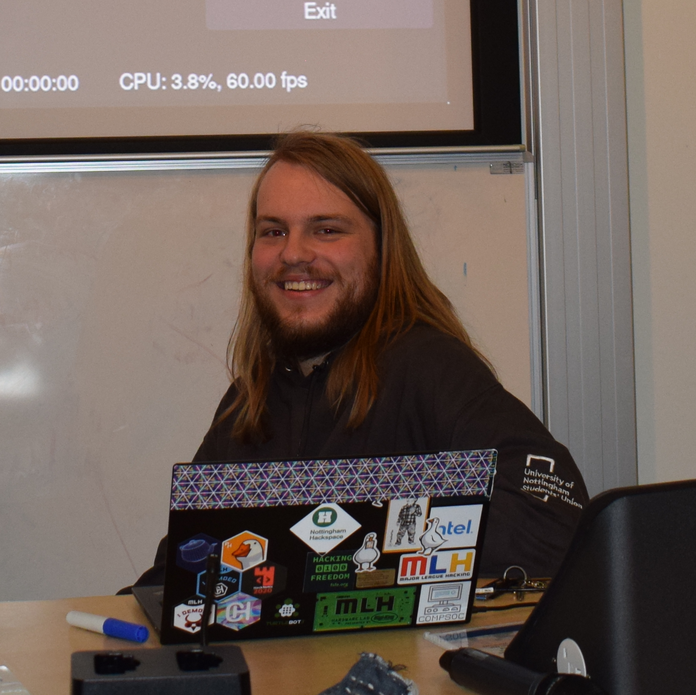

 Hi, welcome to my website! I'm a third-year computer science student at the University of Nottingham, where I'm also on the committee of HackSoc, where I run some talks and workshops.
My main interests within computer science are processor architecture, operating systems, embedded systems, and computer graphics. Outside of computer science I have many other interests, including designing circuits, CNC machining, playing guitar and double bass, and drinking tea.
In the following blog, I'll talk about whatever projects I'm currently working on. If you want to ask me about anything I've written here, or anything else, email me, or add me on Discord (Jacob Garby#6080).